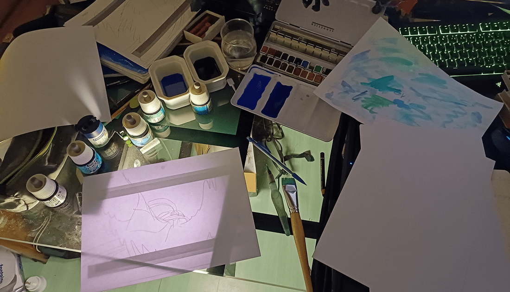
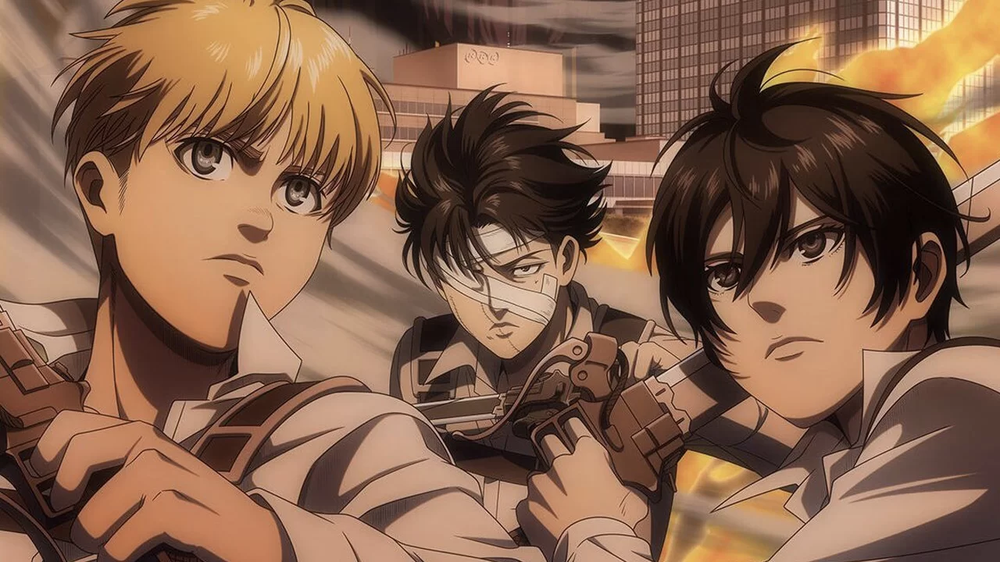
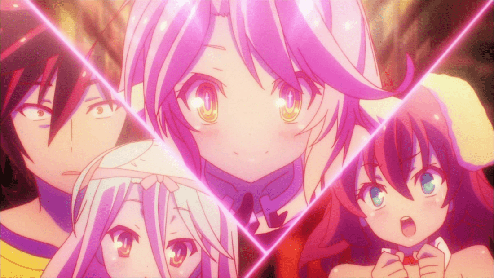
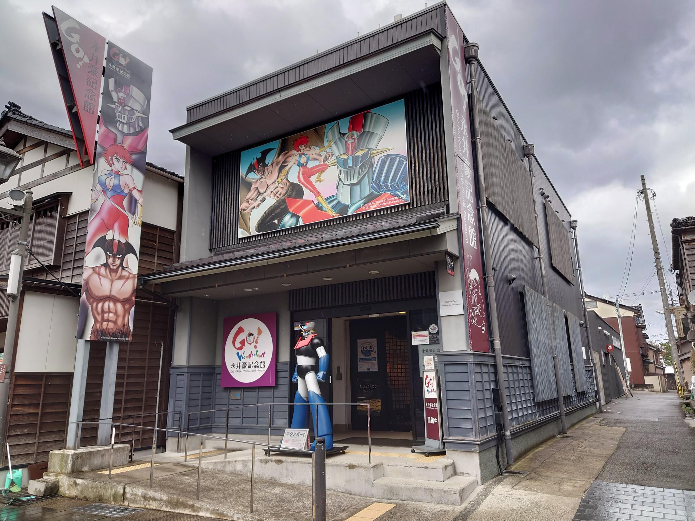

Animadores hartos de trabajar en MAPPA
SomosKudasai
No tengo intenciones de seguir apoyando una compañía a la que no le importan sus trabajadores“, revelando que no tiene intenciones de volver a trabajar para los estudios MAPPA.
Shingeki no Kyojin fue el anime del año según Hollywood
SomosKudasai
Los críticos cinematográficos de la Hollywood Creative Alliance otorgaron el Premio Astra a la serie animada “Shingeki no Kyojin (Attack on Titan)” como la Mejor Serie Animada en Streaming
Estas series de anime de hace diez años nunca regresaro
SomosKudasai
Este año marca el décimo aniversario de varias series de anime que capturaron los corazones de los espectadores en 2014. Sin embargo, lo que hace que estas producciones sean aún más especiales es que, a pesar de su popularidad, nunca lograron asegurar una segunda temporada.
Japón pierde importante museo de anime tras el terremoto
SomosKudasai
No tengo intenciones de seguir apoyando una compañía a la que no le importan sus trabajadores“, revelando que no tiene intenciones de volver a trabajar para los estudios MAPPA.
Ver más Noticias